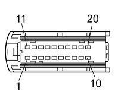

D020A DASHBOARD/REAR COUPLING (DASHBOARD)
- Path
- Electrical equipment > 3 CONNECTORS > D INTERMEDIATE COUPLINGS > D020 DASHBOARD/REAR COUPLING > D020A DASHBOARD/REAR COUPLING (DASHBOARD)
- Kind
- connector pinout (pin -> wire colour -> other end)
- Applies to
- all engines; all production periods
- Interactive page
- https://sloeber94.github.io/elrnDB-fCrm/en/#/194004957
Applies to: all engines; all production periods

Wiring | Colour |
|---|---|
NERO (black) |
Pin | Cable | Destination | |||
|---|---|---|---|---|---|
Sec.. | Colour | Node | Connect. | Pin | |
1 | 0,35 | AL (light blue with blue stripe) | 18 | ||
2 | 0,35 | AB (light blue with white stripe) | 9 | ||
3 | 0,5 | GR (yellow with red stripe) | 2 | ||
8 | 0,35 | LS (blue with pink stripe) | 6 | ||
9 | 0,35 | BM (white with brown stripe) | 5 | ||
10 | 0,35 | AG (light blue with yellow stripe) | X | 6 | |
30 | |||||
11 | 1,5 | BG (white with yellow stripe) | 2 | ||
12 | 0,35 | GN (yellow with black stripe) | 4 | ||
13 | 0,35 | MV (brown with green stripe) | 15 | ||
14 | 0,35 | SV (pink with green stripe) | 6 | ||
15 | 0,35 | NS (black with pink stripe) | 13 | ||
16 | 0,35 | LZ (blue with violet stripe) | 3 | ||
17 | 0,35 | NV (black with green stripe) | 12 | ||
18 | 0,35 | LG (blue with yellow stripe) | 5 | ||
19 | 0,35 | NZ (black with violet stripe) | 14 | ||
20 | 0,35 | BL (white with blue stripe) | 17 | ||
Topics linked from this page (8)
- 20 DASHBOARD
- H005B STEERING COLUMN SWITCH UNIT (DASHBOARD)
- H036 CONTROLS ON TUNNEL
- M001G BODY COMPUTER (DASHBOARD)
- M047A TYRE INFLATION PRESSURE CONTROL UNIT (DASHBOARD)
- M047B TYRE INFLATION PRESSURE CONTROL UNIT (DASHBOARD)
- P020F RADIO (DASHBOARD)
- P050 CIGAR LIGHTER / CURRENT SOCKET
Topics that link to this page (20)
- D006 FRONT/REAR COUPLING (REAR)
- D006 FRONT/REAR COUPLING (REAR)
- D030 DRIVER'S FRONT DOOR COUPLING (REAR)
- D030 DRIVER'S FRONT DOOR COUPLING (REAR)
- D030 DRIVER'S FRONT DOOR COUPLING (REAR)
- D030 DRIVER'S FRONT DOOR COUPLING (REAR)
- D030 DRIVER'S FRONT DOOR COUPLING (REAR)
- D030 DRIVER'S FRONT DOOR COUPLING (REAR)
- D097K SHORT CIRCUIT COUPLING (REAR)
- D155 FRONT/REAR SERVICE CABLES COUPLING (REAR)
- D155 FRONT/REAR SERVICE CABLES COUPLING (REAR)
- H005B STEERING COLUMN SWITCH UNIT (DASHBOARD)
- H036 CONTROLS ON TUNNEL (DASHBOARD)
- M001D BODY COMPUTER (REAR)
- M001G BODY COMPUTER (DASHBOARD)
- M047A TYRE INFLATION PRESSURE CONTROL UNIT (DASHBOARD)
- M047B TYRE INFLATION PRESSURE CONTROL UNIT (DASHBOARD)
- P020F RADIO (DASHBOARD)
- P026 HANDSFREE MICROPHONE (REAR)
- P050 CIGAR LIGHTER / CURRENT SOCKET (DASHBOARD)